Nyzo version 608 (commit on GitHub) adds an option to use an identifier instead of a private key for a managed verifier in the sentinel.
This version affects the sentinel only.
We stepped back from development and releases because we wanted to give the community some time to work on Nyzo without the need to constantly keep up with updates and changes to the software. We have been exceptionally pleased with how strong the community has been in our absence. The collaborative problem solving of the cycle has kept the blockchain processing with remarkable efficiency and stability. The Nyzo community is a wonderful example of blockchain governance, and we applaud you for your amazing work.
We have been very careful, from the very beginning of this project, to try to distance ourselves from a long-term de facto leadership of Nyzo. We wanted to get the project moving, and then we wanted to see where the community took it.
We would like to start making further, more limited, contributions to the Nyzo code ecosystem. While we do not want to lead Nyzo, we do want to continue to be involved, as we have as much interest as other members of the community in the continued growth of Nyzo.
Version 574 added trusted-message verification to the sentinel to protect against man-in-the-middle attacks. While this was a positive change, it did prevent the use of managed verifiers for which the sentinel does not have a private key. This version restores the option to use such managed verifiers, while retaining message verification, by allowing specification of the public identifier of those verifiers.
The version also adds block signature verification to the sentinel, which protects against certain malicious actions as well as inadvertently malformed blocks.
In ManagedVerifier, the identifier of the verifier was added as an argument to the constructor. It is no longer derived from the key seed in the constructor.
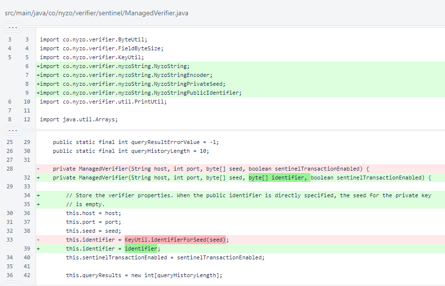The hasPrivateKey() method was added to ManagedVerifier. Previously, the private key was available for all ManagedVerifier objects. Now, some ManagedVerifier objects have only a public identifier.
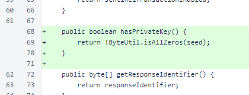When reading ManagedVerifier objects in the fromString() method, the raw hex method is still supported for specifying a private-key seed. However, options for specifying either the private seed or the public identifier have also been added. When a private-key seed is specified, the public identifier is now derived in this method.
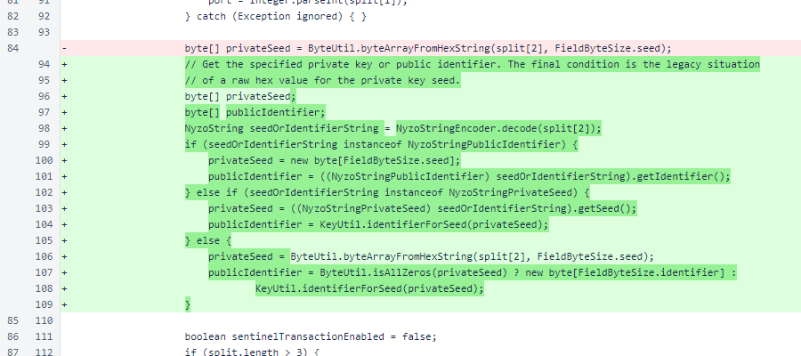If a public identifier is available, the ManagedVerifier is built and returned. Some ManagedVerifier objects have both a private key and a public identifier, and some have only a public identifier.
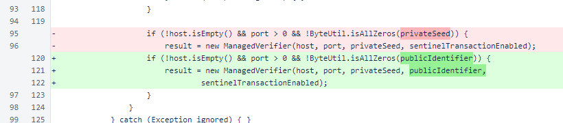In Sentinel, whitelist requests are only sent for verifiers for which a key is available.
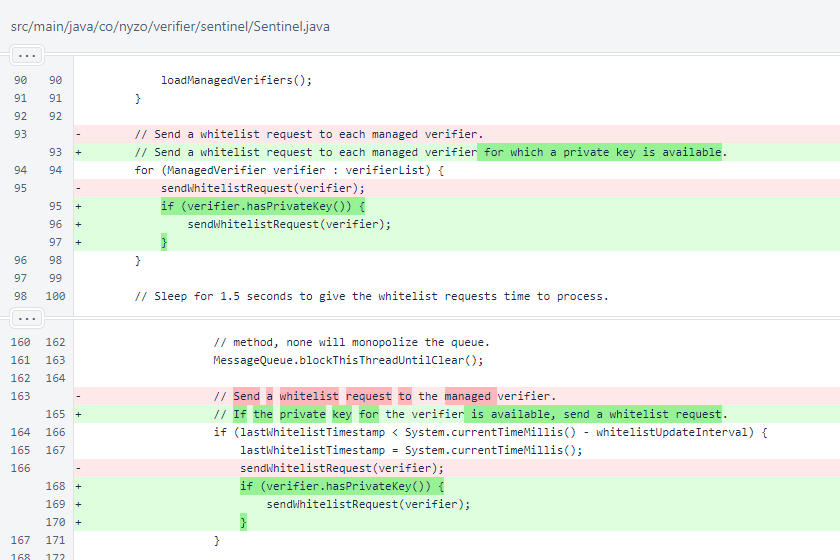In the full-mesh block fetch fallback, the block signature is now checked.

Before UDP blocks are sent for out-of-cycle verifiers, presence of a private key is now checked.
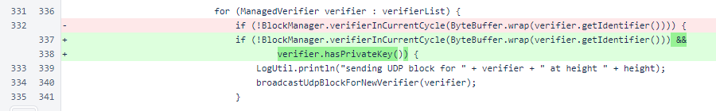In the trusted block fetch, the block signature is also now checked. While these responses are not suspected to be malicious, checking the signature protects against problems that might arise if a minor issue with a verifier causes a malformed block to be sent to the sentinel.
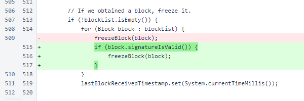When creating blocks for the verifiers in verifierList, blocks are only created for those verifiers for which a private key is available.
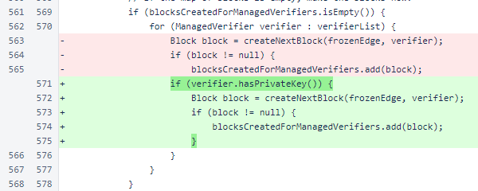In SentinelController, the background-color was moved from the verifier-row to the verifier-label. The verifier-flag class was added.
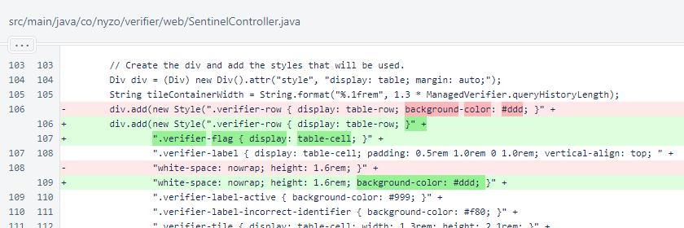The verifier-flag element was added on the left side of each row. If only the public identifier is available, the 🆔 symbol is added. This element could be used in the future for other indications.
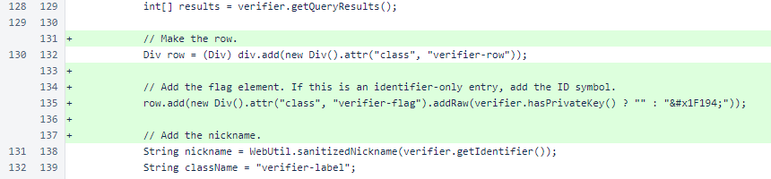In the interface, only the response identifier is now displayed when a message is signed with an unexpected identity. Display of the expected identifier is unnecessary and was cluttering the interface.
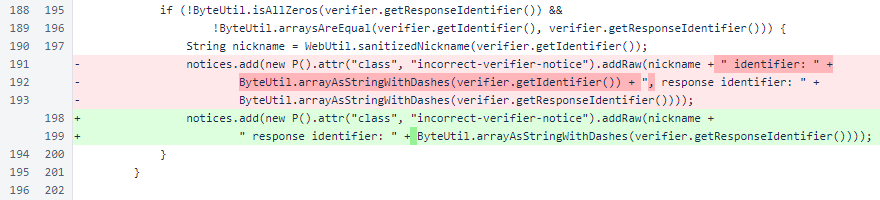